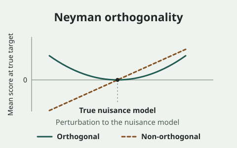
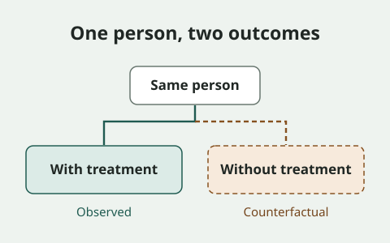
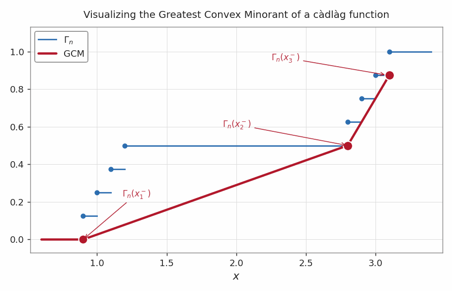

Research

Debiased machine learning
How can we use flexible prediction models and still quantify uncertainty about the quantity we care about? Machine learning can estimate complex relationships in data, but plugging those predictions into a statistical estimate can carry prediction errors into the final answer. I’m interested in methods that reduce the impact of those errors so that we can use flexible models and still draw reliable conclusions.

Causal inference
What would have happened if people had received a different treatment? In observational data, people who receive different treatments often differ in ways that also affect their outcomes. I’m interested in making clear what assumptions let us learn about treatment effects from these data and how much uncertainty remains.

Shape-constrained inference
What can we learn when we know the shape of a relationship? Some functions must be increasing or convex by definition. Using that structure can help us estimate them without specifying a particular formula. I’m interested in how shape constraints change the behavior of estimators and how to quantify uncertainty about the fitted functions.